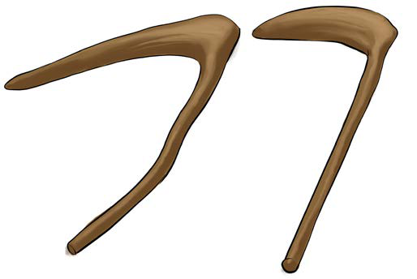

uwepo wa sayansi na teknolojia katika matumizi ya zana za kilimo. Mwanzoni, kilimo kilifanyika kwa kiwango kidogo. Hali hii ilitokana na uwepo wa zana duni za mawe na miti. Aidha, kadiri zana za kilimo zilivyoboreshwa, ndivyo, shughuli za kilimo zilivyoboreshwa. Kielelezo namba 2, kinawasilisha majembe ya miti yaliyotumika awali kwa shughuli za kilimo.

Shughuli za kilimo zilishika kasi wakati wa ugunduzi wa chuma. Ugunduzi wa chuma ulisababisha utengenezaji wa zana za chuma kama vile majembe, mundu, mashoka na mapanga. Jamii zililima eneo kubwa zaidi kwa kutumia zana hizi. Mfano, katika maeneo ya Kagera kulikuwa na wakulima walioimarika kutokana na matumizi ya zana za chuma katika kilimo. Wakulima hawa walimiliki ardhi kubwa na kuikodisha kwa watu wengine kwa ajili ya kilimo. Hali hii ilisababisha kukua kwa mfumo wa ukabaila uliojulikana kama “Nyarubanja”. Wakulima wakubwa waliomiliki ardhi walijulikana kama “Batwazi”. Pia palikuwapo na “Batwana”, ambao hawakumiliki ardhi. Batwana waliishi kwa kulima maeneo ya ardhi za Batwazi, kisha kuwapa Batwazi sehemu ya mazao waliyovuna kama ushuru. Pia, jamii za Wachaga, Wapare, Wasukuma na Wanyakyusa zilikuwa zimepiga hatua kubwa katika shughuli za kilimo kabla ya kuja kwa wakoloni. Jamii zililima mazao kama vile maharagwe, mtama, uwele, ulezi, magimbi na ndizi.